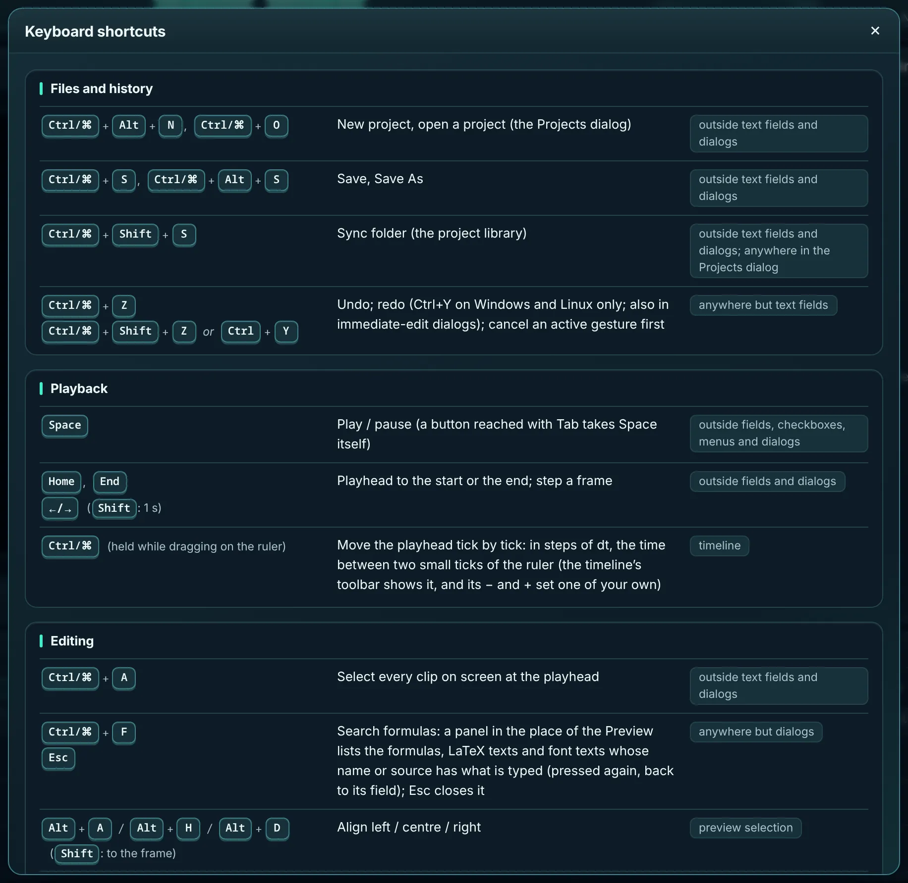

Keyboard and mouse shortcuts
Every key and mouse gesture of the editor, grouped by what you are doing, each with the page that teaches it. It is the sheet that Help ▸ Keyboard shortcuts… shows, and ? opens that sheet anywhere outside text fields and dialogs.
Keyboard
The keys joined by + are pressed together, and / or or separates
alternatives. A bracket says what holding another key changes: (Shift: 0.1) is a
bigger step. Where says where the key works; anywhere but text
fields means that a text field with the focus takes the key as text, and outside fields
and dialogs adds that an open dialog or menu keeps it for itself.
On a keyboard of another script (Russian, Greek, Hebrew…), the letter of a shortcut is the key where a Latin keyboard has it: Ctrl+Z is the key of Я on a Russian layout. A Latin layout that puts the letters elsewhere, such as Dvorak or AZERTY, keeps its own: the shortcut is the key that types the letter.
If you remember only a few:
- Space plays and pauses; ← and → step a frame.
- Ctrl+Z undoes and Ctrl+Shift+Z redoes; Ctrl+S saves.
- Ctrl+D duplicates the selected clips on the timeline.
- Ctrl+F searches the formulas.
- Hold Shift over a selected clip for its handles; Alt + click picks a glyph; Alt+G aligns by symbol.
- ? opens the sheet this page is made from.
No shortcut matches. Try fewer words, or one key.
Files and history
| Keys | What it does | Where | See |
|---|---|---|---|
| Ctrl+Alt+N, Ctrl+O | New project, open a project (the Projects dialog). In a text field or a dialog the browser may take these keys instead: click out of the field, close the dialog, or use the File menu. | outside text fields and dialogs | Projects and files |
| Ctrl+S, Ctrl+Alt+SCtrl+S, Ctrl+Shift+S | Save, Save As. In a text field or a dialog the browser may take these keys instead (Ctrl+S offers to save the page): click out of the field, close the dialog, or use the File menu. | outside text fields and dialogs | Projects and files |
| Ctrl+Shift+SCtrl+Alt+S | Sync folder (the project library) | outside text fields and dialogs; anywhere in the Projects dialog | Projects and files |
| Ctrl+Z Ctrl+Shift+Z or Ctrl+YCtrl+Z Ctrl+Shift+Z | Undo; redo (Ctrl+Y on Windows and Linux only; also in immediate-edit dialogs); cancel an active gesture firstUndo; redo (also in immediate-edit dialogs); cancel an active gesture first | anywhere but text fields |
Playback
| Keys | What it does | Where | See |
|---|---|---|---|
| Space | Play / pause (a button reached with Tab takes Space itself) | outside fields, checkboxes, menus and dialogs | The Preview |
| Home, End ← / → (Shift: 1 s) | Playhead to the start or the end; step a frame | outside fields and dialogs | The timeline |
| Ctrl (held while dragging on the ruler) | Move the playhead tick by tick: in steps of dt, the time between two small ticks of the ruler (the timeline’s toolbar shows it, and its − and + set one of your own) | timeline | The timeline |
Editing
| Keys | What it does | Where | See |
|---|---|---|---|
| Ctrl+A | Select every clip on screen at the playhead | outside text fields and dialogs | The Preview |
| Ctrl+F Esc | Search formulas: a panel in the place of the Preview lists the formulas, LaTeX texts and font texts whose name or source has what is typed (pressed again, back to its field); Esc closes it | anywhere but dialogs | Organizing |
| Alt+A / Alt+H / Alt+D (Shift: to the frame) | Align left / centre / right | preview selection | Align and distribute |
| Alt+W / Alt+V / Alt+S (Shift: to the frame) | Align top / middle / bottom | preview selection | Align and distribute |
| Ctrl+Alt+H / Ctrl+Alt+VCtrl+Alt+H / Ctrl+Alt+V | Distribute horizontally / vertically (3+ clips) | preview selection | Align and distribute |
| ← / →, ↑ / ↓ (Shift: 0.1) | Move the selected clips 0.01 (Shift: 0.1) at the playhead, as a drag would move them; a run of presses is one undo step. With nothing selected, ←/→ step the playhead | preview, after a click on it, with clips selected | The Preview |
| Alt+G | Align by symbol: click the symbol to move, then the reference symbol (or ←/→, ↑/↓ and Enter); a compass picks the side; Shift+wheel sets the reach | preview | Align by symbol |
| Shift+Alt+G | Align by symbol, the reference symbol on a formula locked in the preview: it stays, and the formula of the first symbol moves to it | preview | Align by symbol |
| S | Circle selector of the preview on or off: a click takes the symbol nearest to the pointer within a circle (Shift+wheel sets its reach); with a selected clip under the playhead and the keyboard out of the preview, or with a sound selected, S splits the selected clips at the playhead instead — the second half of a formula’s clip becomes a clip of a copy of it (Preferences → Split suffix names it) | outside fields and dialogs | Picking glyphs |
| G | Keep the symbol to move as it is at the playhead, to click its reference at another time (its formula stays in view, faint, and the ruler marks the instant); G again lets it go | preview, aligning by symbol | Align by symbol |
| Shift+C | Copy colours in order: click, one by one, the glyphs of the preview whose colours to copy (the Animations panel lists them); Enter then pastes them, in that order, on the glyphs clicked next; Shift+C again leaves | outside fields and dialogs | Colouring |
| Shift+V | Paste the colours last copied in order once more, from the first one | outside fields and dialogs | Colouring |
| Enter Backspace Esc | Go on from the copy to the paste; take the last click back; leave, keeping what was pasted | preview, colours in order | Colouring |
| Delete / Backspace | Delete the selected formula (held to confirm), clips, relation, block, camera move or target camera | Creator, timeline | The timeline |
| F2 Enter | Rename; edit the formula | formula card | Formulas |
| F2 Enter (→/← too in the list view) | Rename the group; open or close it | group of formulas | Organizing |
| ↑ / ↓, Home, End Shift+↑ / Shift+↓ Ctrl+Space (←/→ too in the block view)↑ / ↓, Home, End Shift+↑ / Shift+↓ Ctrl+Enter (←/→ too in the block view) | Move and select; extend the selection; add or remove a formula | formula list | |
| Ctrl+D | Duplicate the selected clips, block or camera move (a formula: Duplicate in its menu) | timeline | The timeline |
| Tab ← / →, ↑ / ↓, Home, End Shift+← / Shift+→ | Into the clips; between the clips of a track, the tracks and a clip's block lanes; extend the selection along the track | timeline | The timeline |
| Enter Shift+F10 or MenuEnter Shift+F10 | Open the clip's formula or the block's menu; the clip's Add animation menu (at the playhead), the menu of the selected clips when there are several, or the block's menu | timeline clip or block | Menus |
| Alt+← / Alt+→ (Shift: 5 frames) Alt+↑ / Alt+↓ | Move the clip a frame; to the track above or below | timeline clip | The timeline |
| Alt+← / Alt+→ (Shift: 5 frames) | Nudge the selected block or camera move a frame; it stops against what it cannot run alongside | timeline block, camera move | Animation blocks |
| Tab ← / →, Home, End Enter, Shift+F10 or MenuTab ← / →, Home, End Enter, Shift+F10 | Into the camera's moves; between them, in the order they run; the menu of a move | timeline, Camera row | The camera |
| P Shift+P | Add a pause at the playhead; add a comment there, its words asked for first — where the scene rests (elsewhere a notice says what runs there; a second pause on a frame is not added) | outside fields, menus and dialogs, with the Slides mode on | Slides and HTML |
| Tab ← / → Delete / Backspace Enter Shift+F10 or MenuTab ← / → Delete / Backspace Enter Shift+F10 | Reach the marks one by one; move the focused mark a frame inside its zone (↑/↓ in Zen mode); delete it; write its words; its menu | a pause or a comment on the ruler (Slides mode) | Slides and HTML |
Preview and timeline
| Keys | What it does | Where | See |
|---|---|---|---|
| Shift (held) | Transform handles on the selected clips (a group when several); link ports on every clip | preview, timeline | The Preview |
| Alt (held) | Only the edges answer the pointer — of the clips, and of their intros and outros: trim a clip, or make an intro or an outro longer or shorter, where a block or a relation window covers the edge | timeline | Intro and outro |
| Ctrl (held while dragging) | Free scale and rotation (no scale step — Preferences → Scale step — nor 15° steps); no snapping to other formulas | preview | The Preview |
| Alt Ctrl+Alt (pressed while dragging) | Move only horizontally or only vertically — the way the pointer has gone further from where the drag began —, still snapping along that axis to other formulas and to the grid; with Ctrl/⌘ too, without snapping. Let go of Alt and the drag is free again | preview | The Preview |
| Ctrl + wheel Alt + drag on empty space, or the middle buttonpinch or Ctrl + wheel scroll, Alt + drag on empty space, or the middle button | Zoom about the pointer; pan | preview | The Preview |
| Ctrl + wheel middle button (held)pinch or Ctrl + wheel middle button (held) | Zoom about the pointer; drag the view both ways at once (Esc puts it back) | timeline | The timeline |
| T (held while moving the mouse) | Move the timeline’s view along time as dragging its scrollbar would, wherever the pointer is: sideways, or up and down in Zen mode; the view stays where it is when T is released | outside fields, menus and dialogs | The timeline |
| Shift+T (held while moving the mouse) | Move the playhead to the time the pointer is at, at once and as it moves, wherever the pointer is: its place sideways, or up and down in Zen mode; the playhead stays where it is when the keys are released, and Shift pressed or let go while T is held changes between the playhead and the view | outside fields, menus and dialogs | The timeline |
| ↑ / ↓, ← / → (in Zen mode) | The timeline is vertical there and the arrows follow the screen: ↑/↓ go along time and ←/→ across the tracks, → towards the ruler, where the first track is; Alt+↑/↓ moves the clip a frame, Alt+←/→ to the track on that side | timeline | The interface |
| Shift (held while dragging on the ruler) | Mark a region, its start in green and its end in red: what is created next (an animation block, a relation, a formula brought to the timeline) takes it, from its start to its end, or is not made when it does not fit there | timeline | The timeline |
| I, O Esc | Put the start, the end of the timeline’s region at the playhead; remove the region (when Esc has nothing else to cancel or close) | outside fields, menus and dialogs | The timeline |
| Ctrl Alt Alt+Shift (held while dragging an end of a line) | Along the line: longer or shorter, in the direction it had; onto the symbol under the pointer; onto the whole formula there (a compass asks the point of them). With none, the end is left free where it is dropped | preview | Lines and arrows |
| ↑ / ↓ (Shift: ×10) wheel with the mouse button held on the number (Shift: ×10, Alt: ×0.1) | Nudge the value by the field's own step, up for more. The wheel writes as it turns — the preview follows —, its turns are one undo step when the button is let go, and Esc takes them back; without the button held the wheel scrolls the panel as always | number boxes of the Animations and Relations panels | |
| Alt + click Alt + drag from a formula | Select a glyph of a formula, with those selected in other formulas (again: take it out; Shift: a range within the formula); a rectangle that selects the glyphs it touches, of every formula (Shift adds) | preview | Picking glyphs |
| Enter / Esc | Make the Transform that carries the shape to what is chosen, at the playhead; leave without making it | preview, while the new target of a shape is chosen | Shapes |
| ← / →, ↑ / ↓ (Shift: 10 px) Delete / Backspace Enter, Esc | Move the selected anchor or handle a pixel (Shift: ten); remove the selected anchor, or bring the selected handle back to it; finish, as Done does | preview, Edit path | Custom paths |
| Delete / Backspace Enter Esc | Remove the selected point of the line; keep the curve, as Done does; put back the curve the mode started with | preview, Edit curve | Lines and arrows |
| Alt + click Esc | Put an end of the line on the symbols the preview picks, not on the whole formula; give up the end being chosen, then leave the mode | preview, Add line | Lines and arrows |
| Ctrl+' | Show or hide the grid | outside text fields and dialogs | The Preview |
| Alt+↑ / Alt+↓ | Denser / sparser grid | while the grid is shown | The Preview |
Dialogs and help
| Keys | What it does | Where | See |
|---|---|---|---|
| ↓ / ↑, Enter ← / → Home, End a letter Tab | Open a menu on its first / last item; the previous or next menu; the first or last item; the next item with that initial; leave the menu | menu bar | Menus |
| Ctrl+Enter | Apply: the formula's source as typed, or the text's draft (one undo step) | formula editor, text editor | Formulas |
| Esc | Cancel the drag; close the dialog (a field's own edit first) or one level of menu | while dragging, in dialogs and menus | |
| C A | Show or fold the Creator; the Animations panel — in Zen mode, open or close its half of the drawer over the Preview | outside fields, menus and dialogs | The interface |
| Alt+M | Multicamera on or off: the scene gets a camera (the Camera row of the timeline) or loses it — off only once every target camera and every camera move is deleted | outside fields, menus and dialogs | The camera |
| V | Camera view on or off: the Preview looks through the scene’s camera at the playhead, as the video does, or shows the world with the camera’s rectangles | outside fields, menus and dialogs, with the multicamera on | The camera |
| F (held) | The pointer takes the objects of the scene, as in the camera view, instead of the camera’s rectangles: they are selected, moved and transformed while the key is down, and the scene does not play | the Preview with the multicamera on, in the world view | The camera |
| ? | Show the keyboard shortcuts | outside text fields and dialogs | Menus |
Mouse
The gestures that go with the keys. A bracket after a key says that you hold it while you do it. The Ctrl of these rows is ⌘ on a Mac.
| Gesture | Where | What it does | See |
|---|---|---|---|
| Click | Creator, timeline, Preview | Selects what is under the pointer. In the Preview, hovering outlines a glyph before you click. | A tour of the interface |
| Shift + click | Creator, timeline, Preview | Selects a range in a list; in the Preview and on the timeline it adds a clip to the selection or takes it out. | The timeline |
| Ctrl + click | Creator, timeline, Preview | Toggles one item in or out of the selection. | The Preview |
| Double-click | Formula card, clip | Opens the formula editor. On a card it edits the formula; on its name it renames it (so does F2). On a clip, in the Preview or on the timeline, it opens the editor of the formula or text. | Writing formulas |
| Double-click | Animation block, relation band | Opens the block’s dialog, or the relation editor. | Animation blocks |
| Right-click, Ctrl + click, or a click with two fingers | Clips, blocks, relations, formula cards, glyphs, empty space | Opens the menu of what is under the pointer. | Context menus |
| Drag a formula card onto the timeline | Creator ▸ timeline | Puts a clip of the formula on the track where you drop it. | The timeline |
| Drag a clip | Preview | Moves the selected clip: a keyframe edit at the playhead. It snaps to the other formulas, the frame and the grid; Ctrl held after pressing frees it, Alt locks one axis; Esc cancels. | The Preview |
| Shift held over a selected clip | Preview | Shows the transform handles: a corner scales in steps, the circle above rotates in 15° steps, and Ctrl frees both. | The Preview |
| Drag on empty space | Preview, timeline lanes | Draws a rectangle that selects the clips it touches; with Ctrl or Shift it adds them; Esc cancels. | The Preview |
| Alt + click, Alt + drag from a formula | Preview | Picks a glyph, with those picked in other formulas; the drag draws a rectangle that picks the glyphs it touches. | Picking glyphs |
| Scroll, Alt + drag on empty space, or the middle button | Preview | Pans the view. A pinch on the trackpad, or Ctrl + wheel, zooms about the pointer and Fit shows the whole frame again. | The Preview |
| Drag an end handle of a line | Preview | Moves that end, free where you drop it. With Ctrl it goes along the line, with Alt onto the symbol under the pointer, with Alt+Shift onto the whole formula. | Lines and arrows |
| Drag a clip | Timeline | Moves it along its track and between tracks. Its edges snap to the ticks of the ruler, the playhead and the edges of other clips; Shift held during the drag frees it. Pressed on the clip, Shift adds the clip to the selection or takes it out. | The timeline |
| Drag the edge of a clip | Timeline | Trims the clip. Drag the inner edge of the hatched intro or outro to make that animation longer or shorter; hold Alt to reach the edge through a block or a relation window that covers it. | Appearing and disappearing |
| Click or drag on the ruler | Timeline | Puts the playhead there, and scrubs. | The timeline |
| Wheel; pinch or Ctrl + wheel; middle button held | Timeline | Scrolls the view; zooms about the pointer; drags the view both ways at once (Esc puts it back). | The timeline |
| Shift held | Timeline | Shows a link port in the lower half of every clip: click one, then another clip, to relate the two. The relation editor opens, or a menu first when they are related already. | How relations work |
| Rest the pointer on a clip | Timeline | Shows its formula in a tooltip. | The timeline |
| Drag the top or bottom edge of a track header | Timeline | Makes that track lower or taller; a double-click gives it the standard height again. | The timeline |
| Wheel with the button held on a number | Animations and relation panels | Writes the value as the wheel turns; Shift makes the steps ten times bigger, Alt ten times smaller. Let go of the button and the wheel scrolls the panel again. |
The sheet in the app
The table above is built from the sheet the app itself shows. Open it with Help ▸ Keyboard shortcuts… or ?, and close it with Esc.

For what a command does, and the other ways to reach it, see Every menu: the entries that have a key show it.